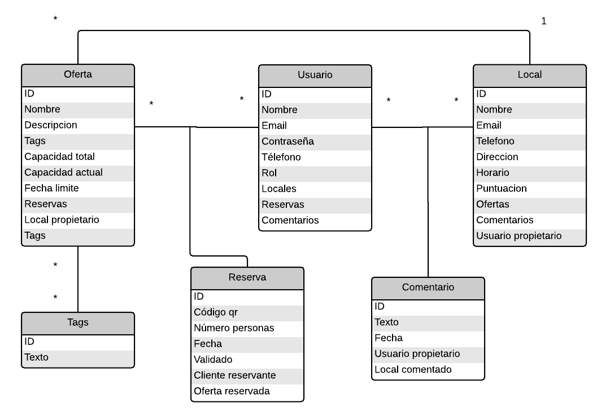

MealNDrink - entrega final del proyecto
Componentes del grupo "MealNDrink"
- Jefferson Almache Montoya
- Juan Luis Armas Perona
- Daniel García Moreno
- Jose Miguel Tajuelo Garrigos
Problemas solucionados - Última entrega
Hemos usado OWASP para corregir los fallos que teníamos de seguridad, hemos sido precavidos y lo hemos usado
tanto en el HTML(r:forJavaScript(csrf_token), r:forJavaScript(variable)) como en el código del backend(Java): usuario.setNombre(Encode.forHtmlContent(variable))
principalmente, además hemos dejado expresiones regulares para que nos comprueben el correcto formato tanto del email, teléfono(9 caracteres) y fecha.
(Hay que añadir el jar OWASP al proyecto, lo hemos adjuntado en la entrega)
Corregido el problema de insertar Javascript cuando añades un comentario.
Hemos añadido en (Usuarios, reservas, etc..)el token en los formularios con un input hiddenvalue="${r:forJavaScript(csrf_token)}" o en por via Ajax (csrf: "${csrf_token}") dependiendo de
la operación para luego comprobarla con la función isTokenValid(session,token) del HomeController.java que nos ha dado el profesor.
También hemos corregido que los ids que son strings sean numéricos para que no se pueda navegar en el sistema de archivos.
Los códigos qr se generan mediante una funcion javascript, no hemos podido hacer que tan solo apareciera la imagen, ahora se muestra el texto
con el que es generado el código qr y la imagen qr. Antes no habia ningún problema dado que tan sólo era un texto, sin embargo como
hemos querido añadir seguridad al proceso y que ningún usuario pudiera generar códigos qr válidos, hubiera sido preferible que no pudiera
ver la "url" que nos hemos creado con una serie de caracteres que se generan aleatoriamente.
La idea sería que al leer el código qr fuera
a la página y se mostrara la información de esa reserva. En los locales al validar el codigo qr se analiza los caracteres que tiene la imagen
con los que tiene asociados en la base de datos, si son iguales se valida, si no da error, una vez validados se muestra el texto con toda la
información de la reserva. (*) La vista a la que iría sería el jsp verReserva.
Vistas que componen esta entrega
- Inicio - página de bienvenida, en ella aparecen todas las ofertas y todos los locales de nuestra pagina.
- Ofertas del mes - en esta página se muestran las ofertas que han superado o igualado su capacidad máxima.
Es decir que son ofertas que tienen una demanda importante.
- Últimas ofertas - en esta página se muestran las ofertas que se han hecho desde la fecha actual
hasta el primer dia de ese mes.
- Administracion - ventana con las acciones posibles de un administrador. Puede añadir usuarios y locales,
asi como editar los datos o eliminar los existentes. El administrador es el único que
puede editar los tags.
- Perfil del usuario - vista de los datos, reservas y comentarios realizados por un usuario. Puede modificar sus datos,
ademas si tiene locales aparece una pestaña desde donde eliminarlos. Si quiere editarlos tiene que
ir al desplegable de PERFIL y seleccionar el local que quiere administrar.
- Pagina intera de un local - página de control de un local. Solo el usuario que la posee puede gestionar las ofertas,
los comentarios, ver los códigos qr y modificar los datos de ese local.
- Pagina externa de un local - página de un local, es visible por todos los usuarios y en la que aparecen los comentarios
junto con las ofertas que posee ese local.
NOTA 1: La idea es que al llevar el raton sobre una imagen aparezcan dos iconos: VER RESTAURANTE, que lleva al restaurante dueño de esa oferta y RESERVAR, que lleva a una pagina
para reservar directamente la oferta.
Si una persona no esta registrada no puede ver el icono de reservar, ademas si se ha llegado a la capacidad maxima de esa oferta tampoco aparecera el icono de reservar
Tambien desde la pagina "externa" del local se puede reservar pero para ver el boton con el que reservar, es necesario haber iniciado sesion
Esquema de la base de datos

A tener en cuenta:
Tan solo dejamos que se puedan editar tags, en el import.sql hemos añadido diez y tan solo las ofertas pueden tenerlos. Como un tag puede
pertenecer a varias ofertas tenemos una tabla donde estan relacionados los tags y las ofertas (oferta_tags)
Contraseñas de los usuarios del import.sql
- Jeff = admin
- JuanLu = 5678
- Dani = pass
- Josemi = 1234
- Maria = maria
- Fulano = fun123
- Mengano = men123
- Rosita = pecas34
- Pablito = pa1234
- Eloisa = isaelo96
Recursos externos utilizados